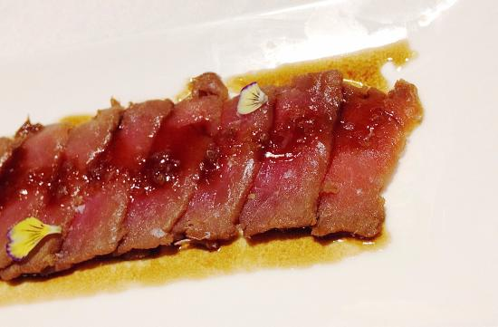
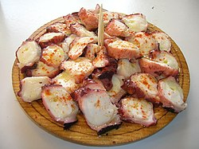
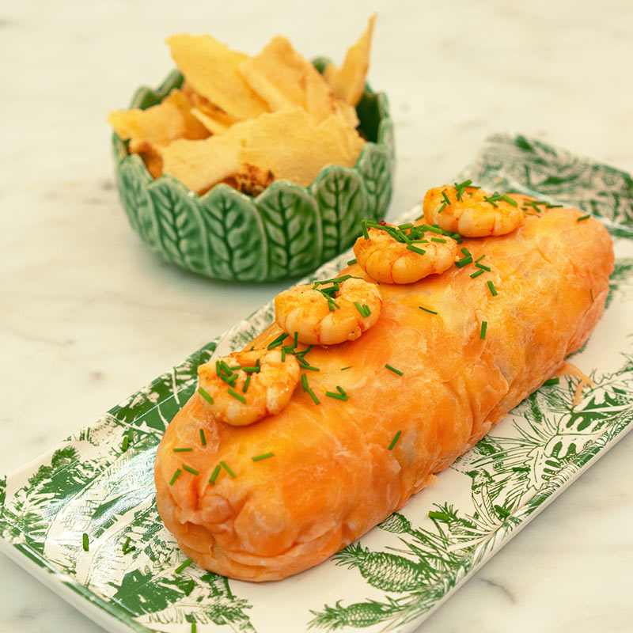
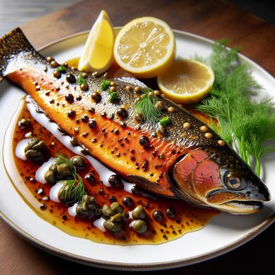
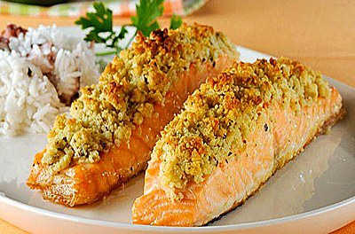
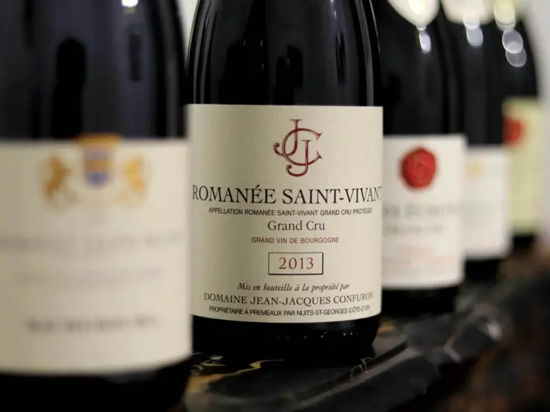
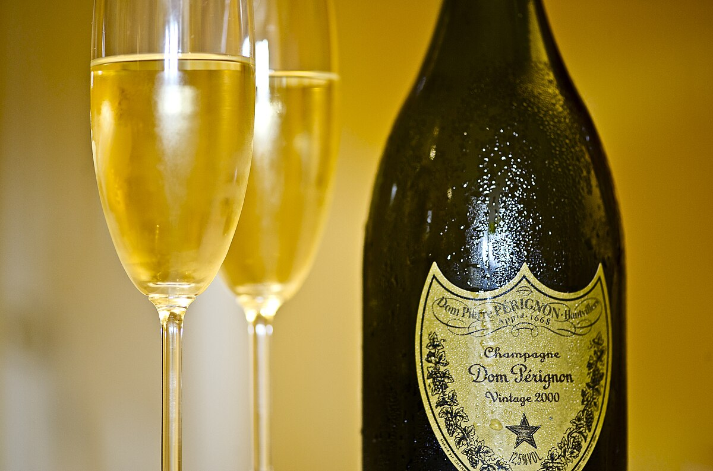

Entradas
Tiradito de atum
Tiradito de atum com vinagrete de maracujá, maionese de shoyu, cebola roxa, coentro, pão frito, furikake de casa e pimenta siricha.
Polvo a la gallega
Polvo grelhado sobre base de batata, chips de batata e dente de alho assado com páprica picante.
Polpetone de camarão
Polpetone de camarão temperado, empanado por uma farinha panko e acompanhado com maionese de limão.
Pratos
Steelhead Trout com Molho de Ervilhas Trufado
Truta steelhead grelhada sobre cogumelos e batatas novas, finalizada com um cremoso molho de ervilhas realçado com óleo de trufa e tomilho.
Peixe ao estilo “en papillote” ou com Molho de Limão e Alcaparras
.webp)
Peixe selado servido com um vibrante molho de limão e alcaparras, ou preparado “en papillote”.
Filé de Peixe Grelhado com Crosta de Castanhas ou à Belle Meunière
Filé de tilápia com crosta crocante de castanhas, ou preparado à Belle Meunière com champignons e alcaparras, finalizado em manteiga e limão.
Bebidas
Domaine de la Romanée-Conti
Refrigerante

Dom Pérignon
